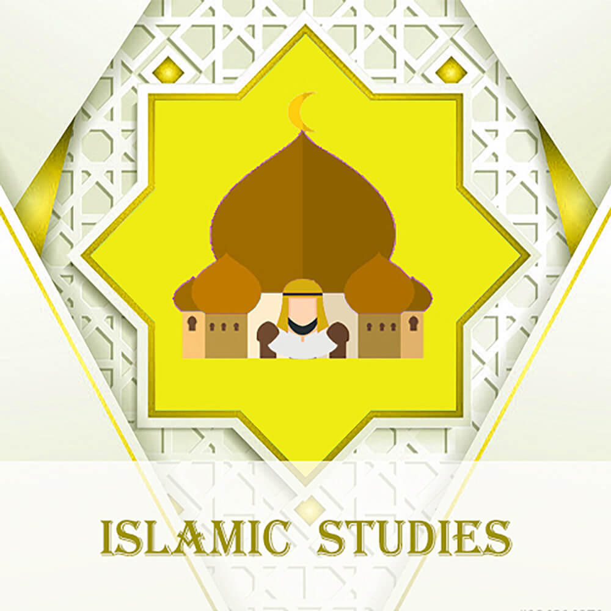

Iqra Islamic School

Islamic Studies
Iqra Islamic School (IIS) was founded in 1996 as a full-time private school serving the Muslim community in the city of London
and beyond. Since its inception, LIS has consistently grown year after year and has gained a reputation of becoming a leading
Muslim educational institute which aims to instill an Islamic morale and a genuine desire of learning in each of its students.
LIS provides an Islamic learning environment with a commitment of using modern day teaching pedagogy to cultivate an advanced and comprehensive
academic program; fully compliant with the Ontario curriculum of studies. We are a K to 8 school with a wide array of resources designed to
foster student achievement that will prepare our pupils to pursue higher education and be competitive in their careers. It is our aim to empower
our students by cultivating their interests and honing their academic skills as strong Canadian-Muslim citizens in Canada.